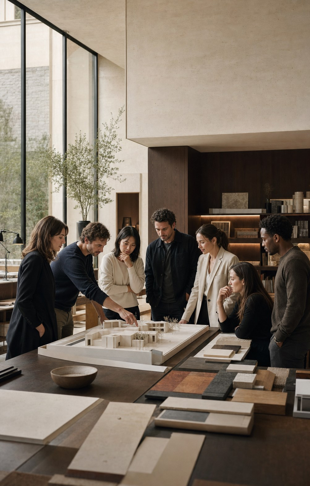
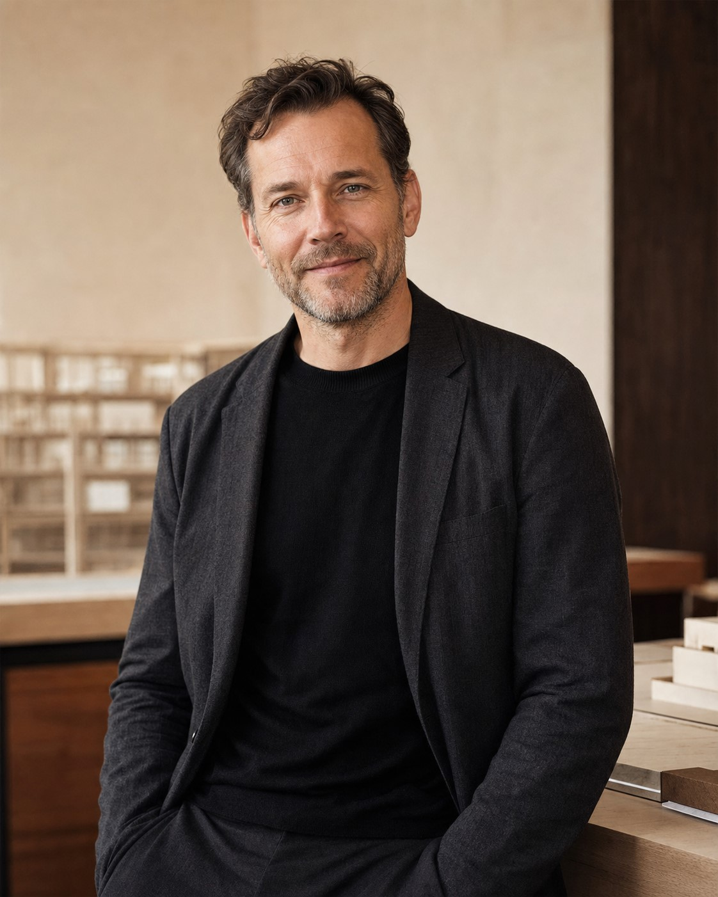
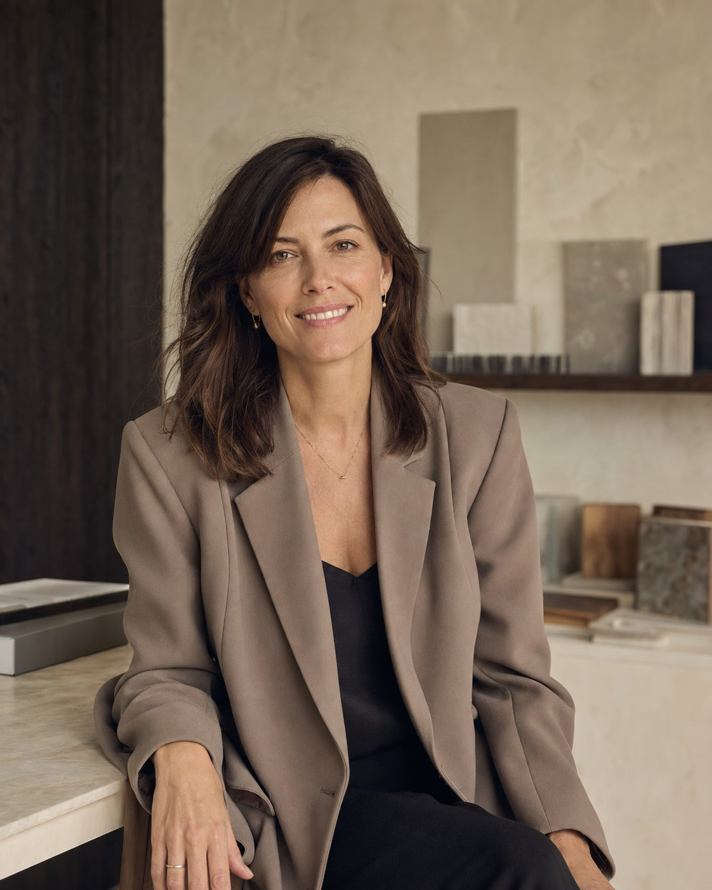
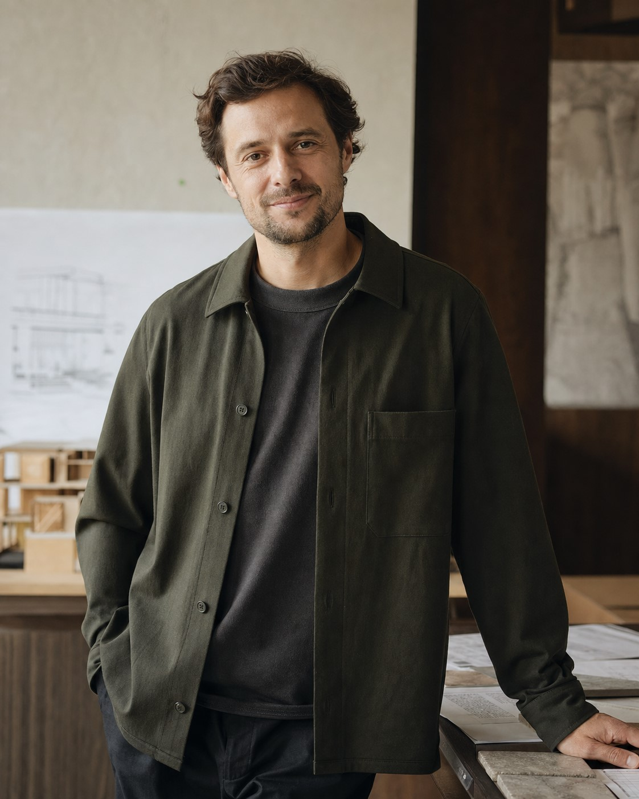
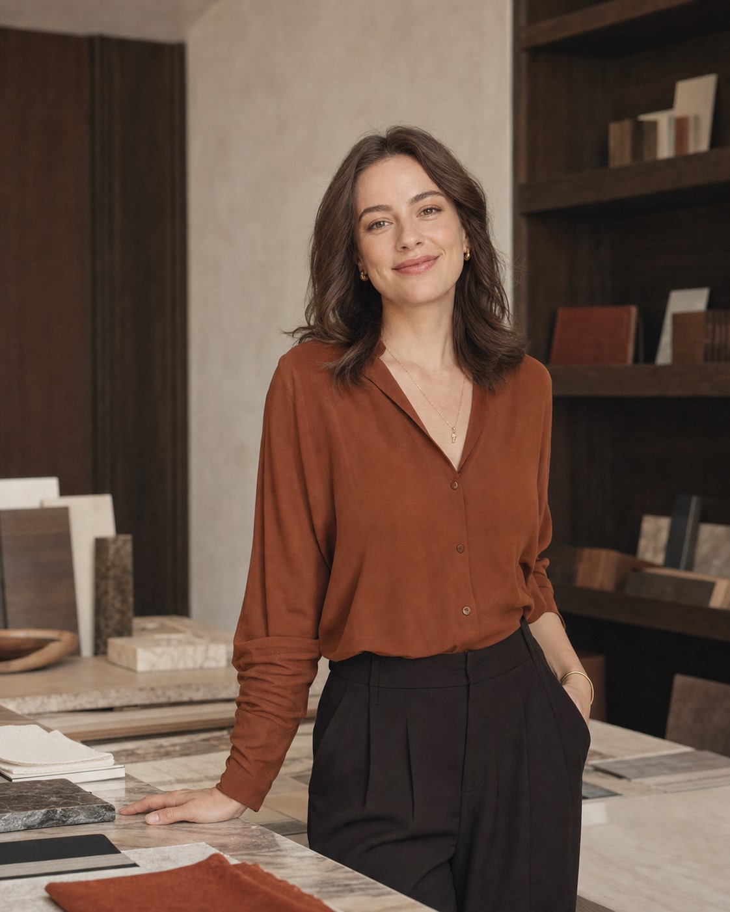

Casa Mare / Mediterranean Coast / 2026
Мы создаём среду, в которой красота становится естественной частью жизни.
ATELIER NORD — независимое архитектурное бюро и студия интерьера, основанная в Екатеринбурге в 2010 году. Сегодня команда работает между Екатеринбургом и Москвой, создавая проекты в России, Европе и на Ближнем Востоке.
Мы проектируем частные резиденции, городские квартиры, бутик-отели и камерные общественные пространства. Архитектура, интерьер, ландшафт, свет, мебель и искусство складываются для нас в одно цельное произведение.
Из авторской мастерской — в междисциплинарную практику полного цикла.
Бюро выросло из убеждения, что архитектуру и интерьер нельзя разделять. Пространство начинается с образа жизни человека и продолжается вплоть до дверной ручки, сценария света и предмета искусства.
Мы сознательно сохраняем камерный масштаб практики. Это позволяет партнёрам лично вести ключевые этапы, а команде — глубоко погружаться в контекст вместо производства универсальных решений.
Пространства с характером.
Откройте проект, чтобы увидеть историю, решения и полную галерею.
Весь проект —
в одних руках.
От анализа участка до последнего предмета в интерьере. Это сохраняет качество замысла и снимает с заказчика необходимость координировать десятки подрядчиков.
Архитектура
Частные дома, виллы, резиденции и камерные общественные здания.
Интерьер
Квартиры, пентхаусы, дома, отели и представительские пространства.
Комплектация
Материалы, мебель, свет, искусство и индивидуальные предметы.
Реализация
Рабочая документация, авторский надзор и контроль качества.
Не начинаем с формы.
Сначала понимаем, как вы хотите жить.
- 01
Знакомство
Обсуждаем привычки, ожидания, участок, бюджет и сроки.
- 02
Концепция
Находим главную идею, сценарий и эмоциональный образ.
- 03
Проект
Детально разрабатываем архитектуру, интерьер и инженерию.
- 04
Воплощение
Контролируем стройку, поставки и финальную настройку пространства.
Форма следует не моде, а человеку.
Проектируем не изображение — проектируем опыт.
Место задаёт первый вопрос.
Свет, климат, вид, рельеф и культурная память становятся исходным материалом проекта.
Красота должна быть тактильной.
Выбираем материалы, которые достойно стареют, хорошо звучат вместе и приятны в ежедневном контакте.
Архитектура живёт дольше тренда.
Убираем лишнее, оставляя ясную основу, способную меняться вместе с жизнью владельца.
Studio intelligence
Исследуем прежде, чем рисовать.
Солнце · 08:40 / Ветер · ЮЗ 4,2 м/с
Каждое исследование становится частью рабочей документации, а не отдельной красивой презентацией.

Один проект — единая команда.
Архитекторы, интерьерные дизайнеры, инженеры, визуализаторы и комплектаторы работают вместе с первого дня. У проекта нет разрыва между идеей и реализацией: решения принимаются одной командой и проходят личную проверку партнёров.
- Направления
- Architecture · Interior · Landscape
- Офисы
- Екатеринбург · Москва
- Проекты
- Россия · Европа · Ближний Восток
Люди, которые отвечают за результат.

Александр Норд
Architecture & Creative DirectionОпределяет архитектурную концепцию, пространственную драматургию и ключевые решения проекта от первого эскиза до реализации.

Елена Норд
Interior & Art DirectionКурирует интерьер, материалы, свет и предметную среду, соединяя функциональный сценарий с эмоциональным характером пространства.

Марк Лебедев
Design DevelopmentОтвечает за координацию архитекторов и инженеров, рабочую документацию, сроки и сохранение качества концепции.

Анна Волкова
Objects & ProcurementФормирует коллекцию мебели, света и искусства, ведёт индивидуальные изделия, поставки и финальную стилизацию объекта.
Партнёр бюро
Ведущий архитектор
Интерьерная группа
Инженеры и комплектация